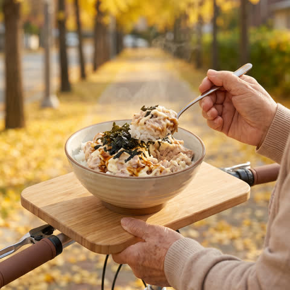

이 페이지의 상품 링크는 쿠팡 파트너스 활동의 일환으로,
이에 따른 일정액의 수수료를 제공받습니다.

EP.04 · 1인분 5분참치마요 덮밥
참치캔 하나면 한 끼 끝
할매 레시피 보기
- 참치캔 기름 꾹 짜기
- 마요 2바퀴 + 간장 반 숟갈
- 슥슥 섞기
- 밥 위에 올리고 김가루 듬뿍
EP.03 · 2인분어묵탕
코인육수 1알로 10분 육수를 1분 만에
할매 레시피 보기
- 물 600ml + 코인육수 1알
- 무 한 줌 납작하게 먼저
- 어묵에 뜨거운 물 부어 기름 빼기
- 어묵 넣고 국간장 1큰술
- 대파 듬뿍, 청양고추 송송
EP.02 · 2인분떡볶이
고추장 2 : 고춧가루 1 황금비율
할매 레시피 보기
- 떡 300g 찬물에 10분
- 물 400ml + 설탕 1큰술 먼저
- 고추장 2 · 고춧가루 1 · 간장 1
- 어묵은 마지막 2분
- 대파 듬뿍, 국물 자작하면 끝
EP.01 · 1인분김치볶음밥
신김치 + 찬밥이면 끝
할매 레시피 보기
- 김치 송송 썰기
- 김치 볶고 설탕 반 숟갈
- 찬밥 + 고추장 반 숟갈
- 센 불에 휘리릭
- 가운데 계란 톡